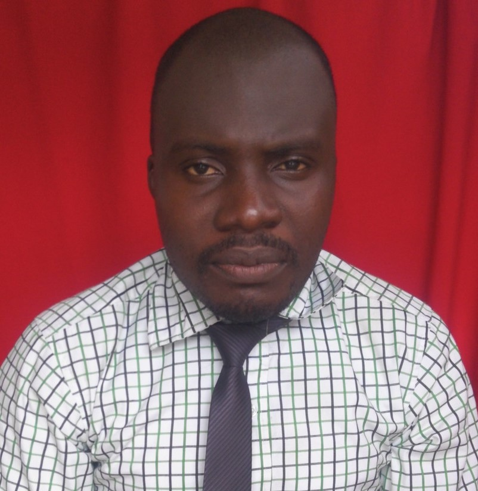

Cletus Ikenna Ugwuanyi
Summary / Objective Statement
Passionate and results-driven Professional Educator
with over 8 years of experience in teaching Mathematics,
Further Mathematics, and Graphic Design. Skilled in
curriculum development, student mentorship, and academic
guidance, with a strong commitment to fostering critical
thinking and creativity. Seeking to leverage my expertise
and newly acquired web development skills to create
engaging, educational digital experiences.
Education
Post Graduate Diploma In Education
National Open University of Nigeria; (NOUN).
March, 2016.
Bachelor Of Engineering
Abubakar Tafawa Balewa University; (ATBU).
April, 2014.
West African Senior School Certificate Examination (WASSCE)
Bayero University Secondary School, Kano (BUK).
June, 2006.
Work experience
Further Mathematics teacher
Science Planet Academy, Abuja.
January, 2024 – March, 2025
- Designed and delivered advanced-level lessons in
Further Mathematics, including topics such as calculus,
matrices, complex numbers, vectors, and mechanics.
- Prepared students for internal and external
examinations such as WASSCE and UTME by developing
targeted practice materials and mock assessments.
- Collaborated with other educators to align
curriculum with national standards and promote
interdisciplinary learning.
- Conducted extra tutoring sessions and remedial classes
to support students requiring additional help.
Graphics Design Trainer
C.Mario Digital Solutions, Abuja.
January, 2021 – December, 2024
- Delivered hands-on training in Graphic Design principles,
tools, and software including Adobe Photoshop and Illustrator.
- Developed structured lesson plans and project-based
learning modules to teach typography, layout, branding,
digital illustration, and visual storytelling.
- Evaluated learners' progress through portfolio reviews,
assignments, and practical assessments, providing
constructive feedback to improve design quality.
- Mentored aspiring designers on career development,
freelancing, and client communication best practices.
Mathematics teacher
Passionist International School, Enugu.
September, 2016 – Dec, 2020
- Planned and implemented engaging Mathematics lessons
aligned with national curriculum standards.
- Differentiated instruction to accommodate various
learning styles and abilities, ensuring inclusive and
effective learning for all learners.
- Utilized interactive tools, digital resources, and visual
aids to enhance understanding and pupils engagement.
- Maintained a structured and supportive classroom
environment that fostered discipline, curiosity, and
critical thinking.
- Participated in professional development workshops and
contributed to school improvement initiatives.
Skills & Areas of Expertise
- Mathematics Instruction (Algebra, Geometry, Trigonometry, Calculus, Statistics)
- Further Mathematics (Matrices, Complex Numbers, Mechanics, Vectors)
- Graphic Design Tools: Adobe Photoshop & Illustrator
- Student Mentorship & Academic Counseling
- Creative Problem Solving & Critical Thinking
- Public Speaking & Presentation
- Workshop Facilitation & Training
- Classroom & Behavior Management
- Time Management & Task Prioritization
- Project-Based Learning & Portfolio Development
- Team Collaboration & Staff Development
Awards, Certifications & Achievements
- Web Development Bootcamp (In Progress) – The App Brewery
- Best Mathematics Instructor Award (PIS Awards 2020)
- Academic Counselor of the Year (PIS Awards 2020)
- Graphic Design Certification (Alison.com 2022)
- Successfully Trained Over 20+ Students in Graphic Design

Hobbies
Contact Me